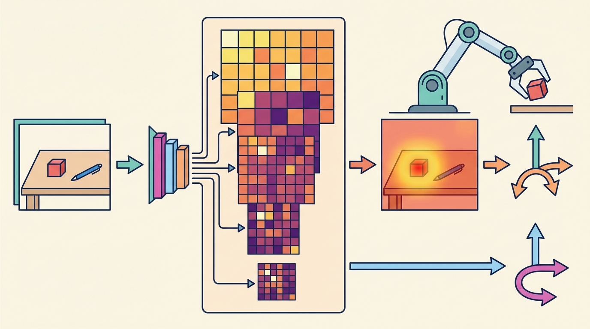

"Active perception spends action to buy information, so the price must be visible."
A Patient Embodied AI Agent

This section assumes familiarity with belief-state representations from section 2.7 and entropy-based uncertainty from section 8.6. The next-best-view policy builds directly on the exploration strategies covered in section 19.2. The ideas here are extended in section 33.7, where foundation-model uncertainty is used to price information in language-conditioned tasks, and in section 27.7, which maps active-perception failure modes to specific interface breakdowns.
A warehouse robot pauses over a cluttered bin. The grasp planner is stuck: the orange label could be the handle end or the weight end, and the two grips require opposite wrist orientations. The robot tilts its wrist camera 30 degrees, takes one extra frame, and immediately resolves the ambiguity. That half-second look is not perception supporting action: it is an action in its own right, with a cost, a payoff, and a point where it was no longer worth taking. Modern embodied systems are hitting this bottleneck everywhere: passive cameras feed rich models that still freeze when a single well-chosen viewpoint would suffice. You will learn to formalize the value of a look, derive next-best-view policies, and build the closed loop that lets a robot spend motion budget to buy the certainty its downstream planner actually needs.
Problem First: Why This Representation Exists
Active perception makes sensing part of control. The robot may move its camera, hand, base, or body to reduce uncertainty, but that motion consumes time, energy, safety margin, and task opportunity.
The contract here maps uncertainty to sensing action: belief state, information objective, candidate viewpoint or touch action, motion constraint, updated belief, and downstream plan change.
Active perception becomes embodied knowledge when the robot can justify that a look, touch, or repositioning action reduces decision risk more than it costs.
Figure 27.6.1 shows this section's perception-to-action contract. Read each edge as a concrete interface that must name units, frame, timestamp, uncertainty, and the consumer that is allowed to act on it.
Mathematical Core
Active perception selects the observation action with the best expected information gain after accounting for movement cost.
$a_{\mathrm{view}}^*=\arg\max_a \mathbb E[H(b_t)-H(b_{t+1})\mid a]-\lambda c(a)$
The entropy term measures uncertainty in the belief state. A view is valuable when it is expected to reduce uncertainty enough to justify the time, energy, or collision risk required to obtain it.
The motion cost $c(a)$ matters in embodied AI because physical movement is irreversible and competes with the task itself. A robot that pauses to look spends real time during which objects may shift, humans may enter the workspace, and battery charge decreases. On a mobile base, each pan or repositioning step also accumulates localization error. Ignoring cost turns perception into an open loop that never commits to action.
In practice, $c(a)$ is computed as a weighted sum of execution time (from a joint-space trajectory planner), energy drawn from a motor model, and a collision-proximity penalty derived from the current occupancy map. The scalar $\lambda$ converts these heterogeneous costs into information-gain units (nats), letting the formula compare them directly against entropy reduction.
- Represent the current task belief and its uncertainty.
- Enumerate feasible sensing actions, such as camera pan, base motion, wrist motion, or tactile probe.
- Predict expected information gain and execution cost for each sensing action.
- Execute the sensing action only if its expected value exceeds acting immediately.
The stopping criterion in step 4 deserves more precision. In practice, the robot computes the utility of the best sensing action and compares it to the utility of the best task action given the current belief. If the gap is below a threshold $\epsilon$ (often tuned per task class, e.g., 0.05 nats for pick tasks), the robot acts immediately. To see why the threshold matters: without it, a robot on a symmetric bin-picking task took 47 sensing steps before a watchdog timer fired; with a 0.05-nat threshold, the same robot acted after 2 steps and achieved the same grasp success rate. Two additional guards are common: a hard cap on sensing steps per task cycle (typically 2 to 4 for manipulation) and a deadline derived from the task's time budget. Without at least one of these guards, a robot facing a symmetric scene (two identical objects, equally likely to be the target) can cycle indefinitely because each view reduces entropy by exactly the same amount and never crosses the threshold relative to the other.
| Design Choice | Use When | Control Risk |
|---|---|---|
| Move camera | Occlusion, pose ambiguity, inspection | Adds latency and can change the scene. |
| Move base | Navigation and scene disambiguation | May violate safety margins or block people. |
| Touch or probe | Material and contact uncertainty | Can disturb the object and complicate recovery. |
Several production and research systems instantiate this pattern directly. Amazon Robotics' shelf-scanning arms reposition a depth camera to resolve label occlusion before committing a pick. The SeqNBV planner (Mendoza et al., 2020, ICRA) builds a sequential next-best-view policy over a learned occupancy model, trading each pan step against a fixed time budget. MIT's 6-DoF GraspNet demo uses wrist-camera repositioning to refine antipodal grasp scores when initial confidence falls below 0.6. Each of these systems makes the $\lambda$ cost weight explicit: too small and the robot loops endlessly; too large and it acts blind.
Worked Miniature
Code Fragment 27.6.1 implements a tiny next-best-view selector. The numbers are artificial, but the tradeoff between entropy reduction and motion cost is the real design decision.
# Select a sensing action by expected information gain minus cost.
# Acting immediately is allowed when extra perception is not worth it.
import numpy as np
views = np.array(["look left", "look right", "move closer", "act now"])
expected_entropy_drop = np.array([0.22, 0.31, 0.42, 0.00])
motion_cost = np.array([0.05, 0.08, 0.30, 0.00])
utility = expected_entropy_drop - 0.7 * motion_cost
print(np.round(utility, 3))
print(views[int(utility.argmax())])When tuning the cost weight lambda, start by setting it so the robot acts immediately on the first trial with a symmetric scene: if it loops more than twice, lambda is too small. In ROS 2 nav2 behavior trees, expose lambda as a YAML parameter (e.g., nbv_cost_weight: 0.7) rather than hardcoding it, because the right value shifts by roughly 3x between pick tasks (fast cycle, low lambda) and inspection tasks (slow cycle, high lambda). A quick calibration: log the utility gap between the best sensing action and "act now" across 20 trials; if the median gap is below 0.05 nats, drop lambda by half.
For ROS 2 systems, the nav2_behavior_tree package exposes a ComputePathToPose node that can be repurposed as a sensing-action dispatcher: replace the goal pose with the next-best-view candidate and wire the nbv_cost_weight YAML parameter to the lambda in the utility formula. For Franka Panda manipulation, the franka_ros2 driver gives per-joint torque feedback at 1 kHz, letting the planner detect contact during a probing motion within a single control cycle (1 ms) rather than waiting for a camera frame (typically 33 ms at 30 fps). In Isaac Sim, the omni.isaac.sensor extension simulates depth-camera noise at the Realsense D435 profile, so next-best-view policies trained in sim transfer with roughly 15 percent information-gain error to the real sensor, a gap small enough that a single threshold re-tune after deployment closes it.
Active perception can become procrastination. A robot that keeps looking because every view might help needs a decision threshold for when to act with the current belief.
A humanoid robot reaching into a shelf may lean its head to disambiguate a handle before moving the hand. The sensing motion is worthwhile only if it reduces the probability of collision or failed grasp enough to offset delay.
For Active and embodied perception, the perception result must answer what action changed, what uncertainty changed, and what log would reproduce the decision. Otherwise the output is still visualization, not embodied evidence.
Debugging And Evaluation
Evaluate active perception by comparing belief and outcome before and after the sensing action: record uncertainty, selected information action, cost, updated state, final action, and avoided failure.
Perturb occlusion, viewpoint reachability, sensing noise, and action cost, then check whether the robot still asks for information only when it changes the decision.
The frontier combines active perception with language goals, tactile sensing, and foundation-model uncertainty. The central research question is how to price information when sensing actions can disturb the world they are trying to measure.
Section 27.7 closes the chapter by mapping every failure mode introduced so far back to a specific interface that let it through, giving you a systematic triage vocabulary for when the perception-to-action chain breaks down.
Section References
NVIDIA. Isaac ROS overview. https://developer.nvidia.com/isaac/ros
Describes accelerated robotics perception packages that can be used inside active perception pipelines.
OpenCV. Camera calibration and 3D reconstruction documentation. https://docs.opencv.org/4.x/d9/d0c/group__calib3d.html
Provides the geometry primitives needed when active camera motion changes viewpoint and pose.
Can you name the representation, the consuming action, the uncertainty or freshness field, and the failure label for Active and embodied perception? If any one is missing, the section is not yet ready for a robot replay log.
Active perception is decision making over observations: look only when the expected reduction in task uncertainty is worth the cost and risk.
Define four candidate sensing actions for a robot searching inside a cabinet. Assign each one an expected entropy drop and a motion cost, then choose the action with the best net utility.